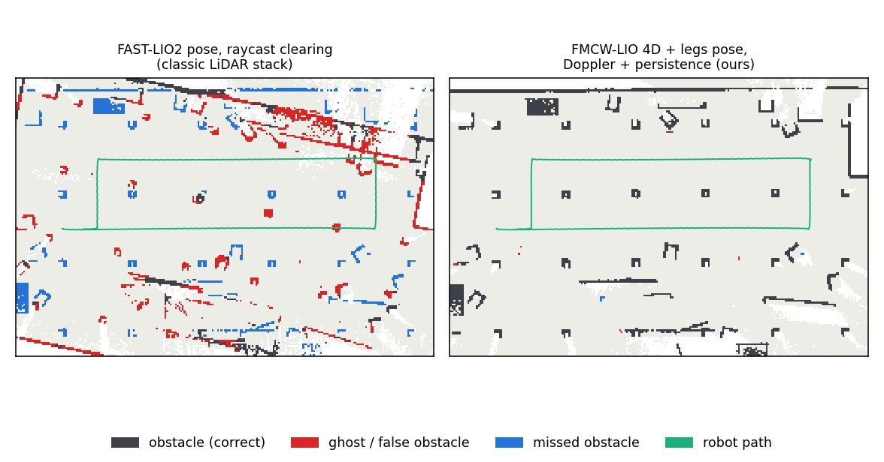
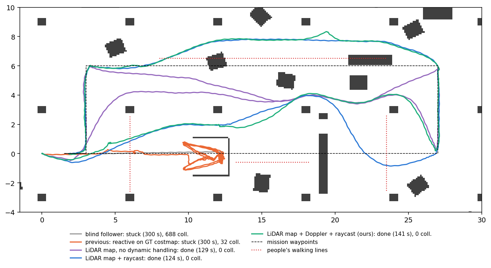
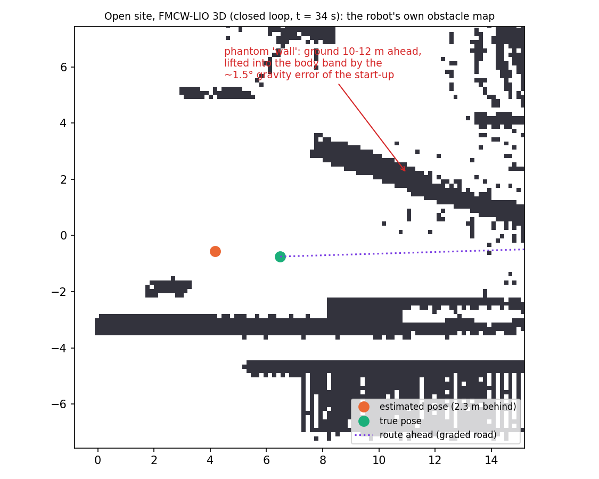

Does the humanoid know where it is, and what is around it?
A Unitree G1 walks simulated construction and energy sites with a head-mounted FMCW LiDAR (with per-point Doppler), an IMU and its joint encoders. This project measures how localization errors become map errors and how map errors make the robot stop or fall, then fixes that chain end to end.
1 · Localization
Six estimators on nine scenes, three seeds each. Geometry-only LiDAR odometry is excellent where there is structure and fails where a site is open, repetitive or full of moving machines. Adding Doppler velocity and leg kinematics closes those gaps; a test that compares the leg velocity with the Doppler velocity catches feet slipping on loose sheets.
| ATE [m] | building floor | workers & machines | long corridor | empty roof | open site |
|---|---|---|---|---|---|
| FAST-LIO2 | 0.030 | 0.694 | 0.298 | 5.86 | 0.660 |
| FMCW-LIO with Doppler | 0.030 | 0.035 | 0.147 | 3.25 | 0.039 |
| + legs + Doppler slip gate | 0.027 | 0.033 | 0.066 | 0.72 | 0.031 |
2 · Mapping for safe motion
The robot builds its obstacle map from its own LiDAR and its own pose estimate. On a busy site two things ruin that map: pose error (shifted, doubled structure) and moving objects (every worker and truck leaves a "ghost" wall).

- Doppler removes moving objects in the same scan (point precision 0.93–0.95, recall 0.83–0.88), without touching static scenes.
- Doppler only sees radial motion, so a person crossing the beam is invisible to it. The online map therefore combines Doppler, guarded free-space clearing and a 0.35 s "recent observations" layer: removing people from the map never removes them from collision checking.
- The evaluation itself was audited: the first reference map was wrong (vehicles driven backwards in old recordings), found because a 1.3 m/s Doppler point sat "behind" a truck. Labels were fixed before any number was reported.
3 · Navigation
Global: a Dijkstra navigation function (no local minima). Local: MPPI on the walking policy's own command interface (forward speed, turn rate), with tracked people predicted over a 2.5 s horizon. 35–40 ms per step in Python.

| 5 seeds, U-trap, 1 m gap, people | success | robot-caused person contacts |
|---|---|---|
| previous: reactive steering on a ground-truth costmap | 1 / 5 | 0 |
| own LiDAR map + MPPI, raycast clearing (classic) | 5 / 5 | 4 (closest 0.12 m) |
| own LiDAR map + MPPI, Doppler + guarded raycast | 5 / 5 | 0 (closest 0.52 m) |
4 · End to end
In closed loop the robot walks on its own pose estimate and builds its own map with it. On the feature-rich building floor both configurations complete 5 of 5. On the open site, geometry-only odometry completed 0 of 3 runs (two stopped for good, one fell): the start-up gravity error becomes a 2–3 m pose error, and the map built with that pose has shifted obstacles and phantom walls. With Doppler and leg kinematics the pose error stays at 0.2 m and the robot completed 3 of 3, without falls.

Honest scope
- Everything is simulation (MuJoCo). The walking policy is Unitree's pretrained policy and was not trained here.
- The FMCW LiDAR model is geometric (true radial velocity + noise); real sensors are noisier.
- The navigator commands body velocities; footstep planning is out of scope. Simulated people never yield.
- Code was developed with an AI coding assistant (Claude); design, experiments and analysis were directed by the author.